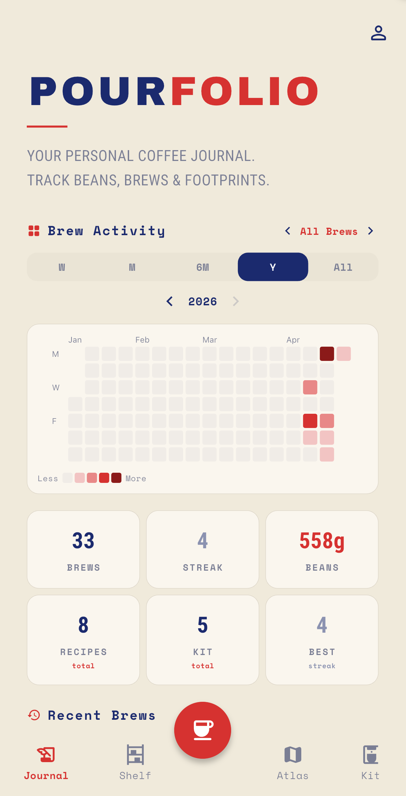
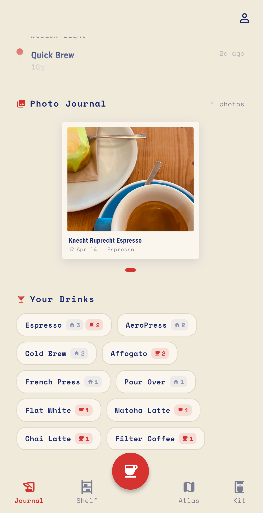
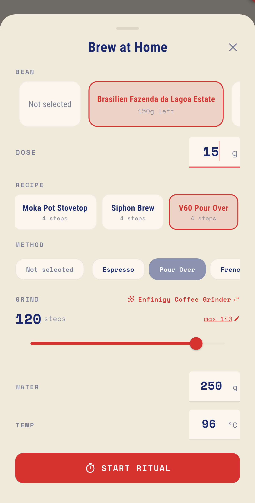
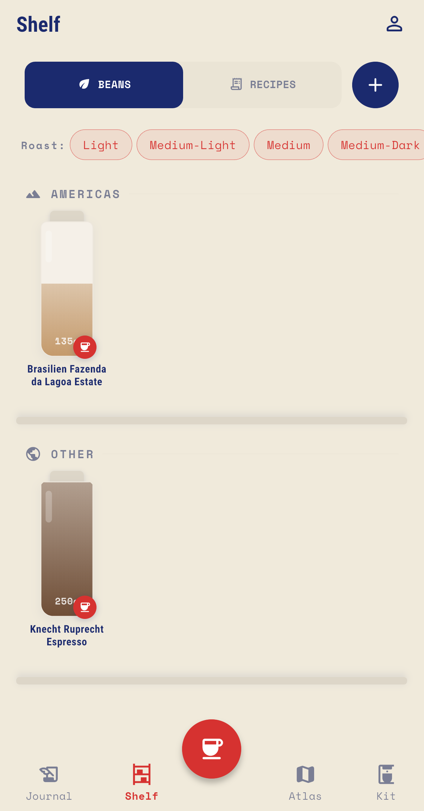
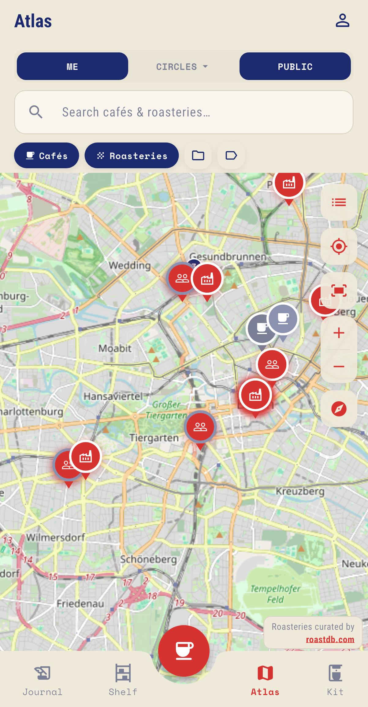
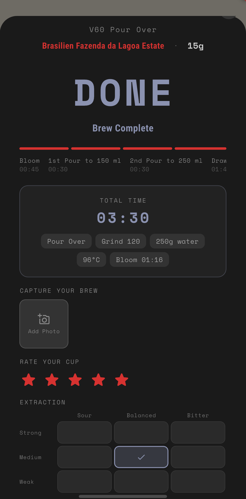
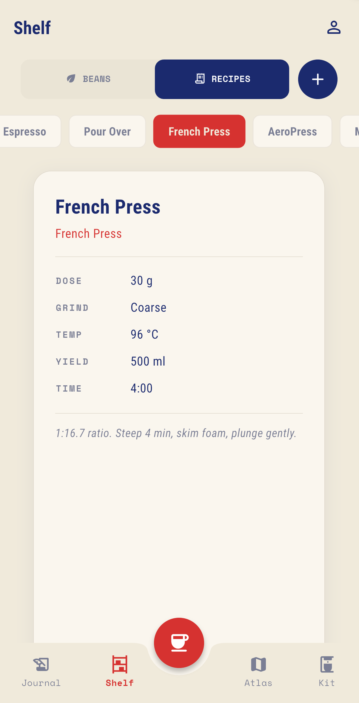
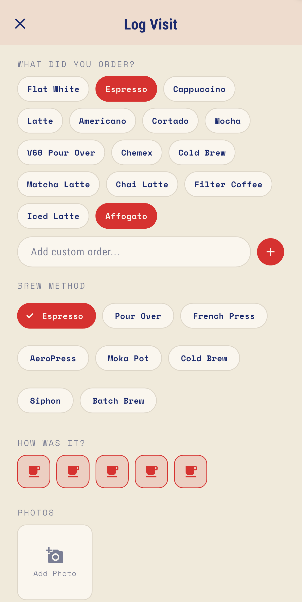
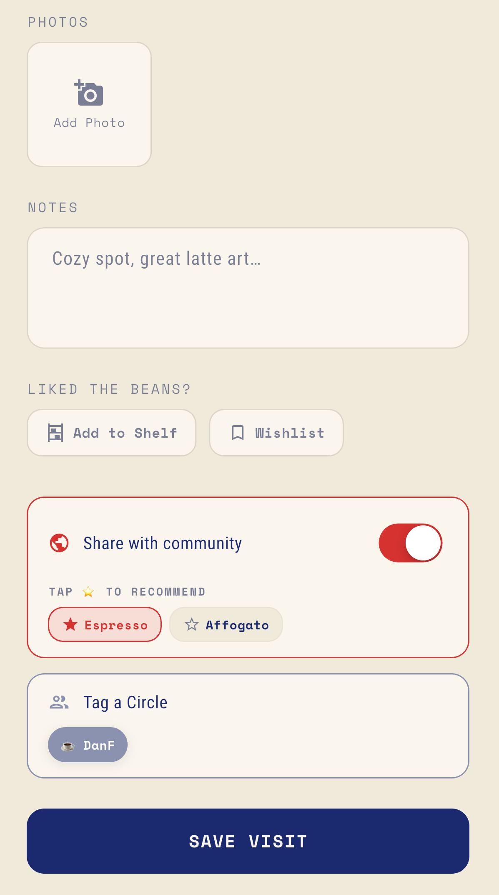

BREW WITH
INTENTION.
scan, brew, remember
Track every bean, every brew, and every discovery. Your personal coffee journal, refined for the modern enthusiast.

WHAT'S INSIDE
Everything you need to elevate your morning ritual into an art form.
JOURNAL YOUR JOURNEY
Visualize your progress with interactive heat maps and detailed brew statistics. Track grind size, water temp, and extraction time to achieve ultimate consistency.


PERFECT YOUR POUR
Guided step-by-step brew recipes for espresso, pour-over, AeroPress, and more. A precision timer keeps your ritual on track.
MANAGE YOUR KIT
From vintage manual grinders to professional espresso machines. Organize your beans, track your recipes, and maintain equipment for peak performance.


ATLAS & CIRCLES
Discover specialty cafés and roasteries on a curated global map. Create private circles with friends to share favorites, plan coffee crawls, and compare tasting notes.
THE FULL EXPERIENCE




"Coffee is a way of stealing time that should by rights belong to your older self."— TERRY PRATCHETT
Plan the next cup before you open the app.
Find dose, water, and espresso yield targets, then save the recipe in Tamped.
Calculate ratioDial in V60 and espresso with practical steps you can log against beans and grind changes.
Read brew guidesStart with Tokyo, London, and Berlin roasteries, then keep favorites in the atlas.
Explore citiesDOWNLOAD TAMPED
Tamped is now available for iPhone. Download it from the App Store to start tracking beans, logging brews, discovering cafés, and sharing coffee notes with your circles. Android testing is still available through Google Play.
Download iOS now
Android testing is invite-only. Use the form below if you want access or release updates.